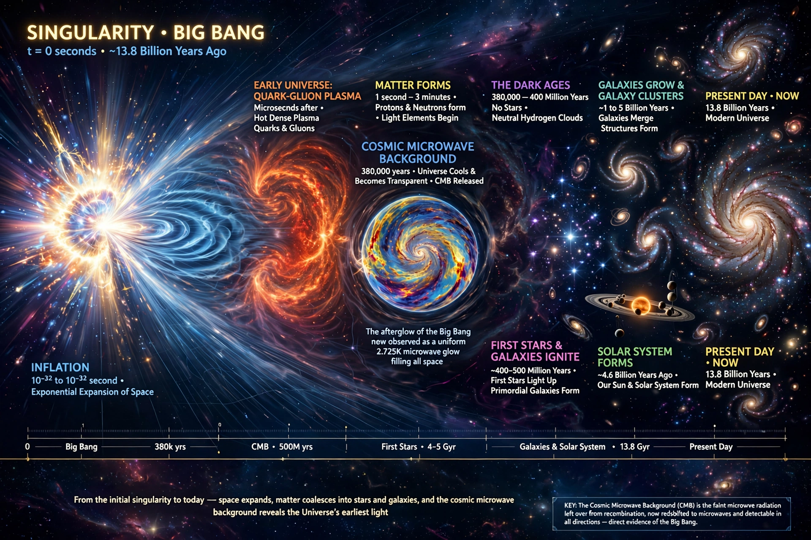

Physical cosmology is a branch of astronomy concerned with the study of the universe as a whole: its origin, large-scale structure, dynamics, and ultimate fate. The prevailing model is the Big Bang theory in its modern form, the Lambda-CDM model, which describes a universe 13.8 billion years old that began hot and dense and has been expanding and cooling ever since.

| Standard model | Lambda-CDM (Big Bang) model |
|---|---|
| Age of universe | 13.8 billion years |
| Key evidence | Cosmic microwave background; Hubble expansion; light-element abundances |
| Composition | ~5% ordinary matter, ~27% dark matter, ~68% dark energy |
Modern cosmology began with Einstein's general theory of relativity (1915) and his 1917 static-universe model, followed by the expanding solutions of Friedmann and Lemaître. Edwin Hubble's observations in the 1920s — building on Vesto Slipher's redshifts and Henrietta Leavitt's Cepheid period–luminosity law — showed galaxies receding in proportion to distance, evidence that the universe expands. The hot Big Bang model was developed by Gamow, Alpher, and Herman, who predicted a relic cosmic microwave background (CMB), discovered by Penzias and Wilson in 1964–65.
In Lambda-CDM, the universe underwent a burst of exponential expansion (cosmic inflation) in its first fraction of a second, seeding the density fluctuations that gravity grew into galaxies and large-scale structure. The expansion is accelerating, driven by dark energy represented by the cosmological constant (Lambda), while cold dark matter (CDM) dominates the mass budget. Precision measurements from the Planck satellite fixed the model's parameters: ordinary matter is only about 5% of the total energy density.
The nature of dark matter and dark energy, the physics of inflation, the matter–antimatter asymmetry, and a persistent discrepancy between early- and late-universe measurements of the Hubble constant (the "Hubble tension") remain active research problems, addressed by surveys such as Euclid, the Vera C. Rubin Observatory, and CMB experiments.
See also: Big Bang · Cosmic microwave background · Dark matter · Dark energy · Lambda-CDM model